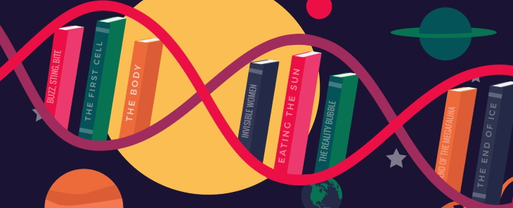

Управление ИТ-активами - скучная рутина или творческая задача?
Размышляя об управлении ИТ-активами, я вспомнил один учебный пример. Менеджер по ИТ-мощностям в крупной компании периодически готовил толстенный отчёт руководству. В очередной раз он не принёс отчёт, решив проверить, нужен ли он вообще. Выждав несколько дней, он пришёл к руководителю и спросил: «Похоже тот отчёт, который я готовлю, не особо востребован, а что вам действительно нужно?» Руководитель признался, что массивный отчёт хороший, но им не пользуются. И набросал на листе бумаги то, что хотелось бы иметь под рукой.
Управление ИТ-активами, как и управление конфигурациями, является базовым процессом для других. В первом случае более важным является финансовый аспект, во втором – эксплуатационные задачи. Оба процесса можно перегрузить деталями и превратить во что-то рутинное. Как же найти баланс и сделать процесс по-настоящему «живым»?
Конечно, баланс унификации и персонального подхода – дело каждого. Вспомним историю про послевоенное автомобилестроение: американская и японская тактика. Постепенно японцы достигли превосходства благодаря, в том числе, выверенному балансу унификации и культуре производства. Но это правило не для всех.
Конечно, баланс унификации и персонального подхода – дело каждого. Вспомним историю про послевоенное автомобилестроение: американская и японская тактика. Постепенно японцы достигли превосходства благодаря, в том числе, выверенному балансу унификации и культуре производства. Но это правило не для всех.
